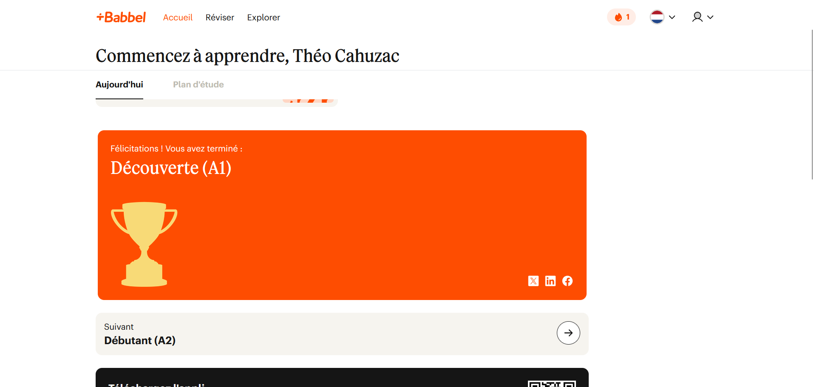

Le néerlandais est la langue la plus parlée en Belgique avec environ 60% de la population en plus d'être une des langues officiel du pays. Il est donc quasiment indispensable de maîtriser le néerlandais dans un contexte professionnel. QUe ce soit pour parler à des clients ou à des collègues. C'est cette réalité du marché de l'emploi belge qui m'a motivé à entamer cet apprentissage de manière autonome, en parallèle de mes études.
J'utilise principalement l'application Babbel pour structurer mon apprentissage au quotidien. Cette plateforme me permet de travailler le vocabulaire, la grammaire et la compréhension écrite de façon progressive. J'ai également la chance d'avoir un ami néerlandophone vivant en Belgique qui m'aide pour la phonétique et la prononciation, aspects difficiles à acquérir seul via une application.
À ce jour, j'ai validé le niveau A1 et j'ai quasiment fini le niveau A2. Concrètement, je suis capable de me présenter, comprendre des phrases simples du quotidien, et tenir une conversation basique. Les points que je travaille encore sont la conjugaison des verbes irréguliers et la construction de phrases complexes.
L'apprentissage du néerlandais en autonomie est aussi un apprentissage en lui-même. Cela me permet d'expérimenter différentes méthodes de travail, d'améliorer ma régularité et de développer ma capacité à apprendre de manière indépendante. En lien avec mon projet professionnel dans le réseau et les infrastructures IT, parler le néerlandais est un atout certain. C'est aussi une preuve de ma capacité à apprendre de façon autonome et régulière, qualité essentielle dans un domaine technique en constante évolution ou l'apprentissage constant est nécessaire.
Je compte continuer jusqu'au niveau B1 d'ici la fin de l'année, en ajoutant des podcasts et des séries en néerlandais pour améliorer ma compréhension orale passive.

⬅ Retour